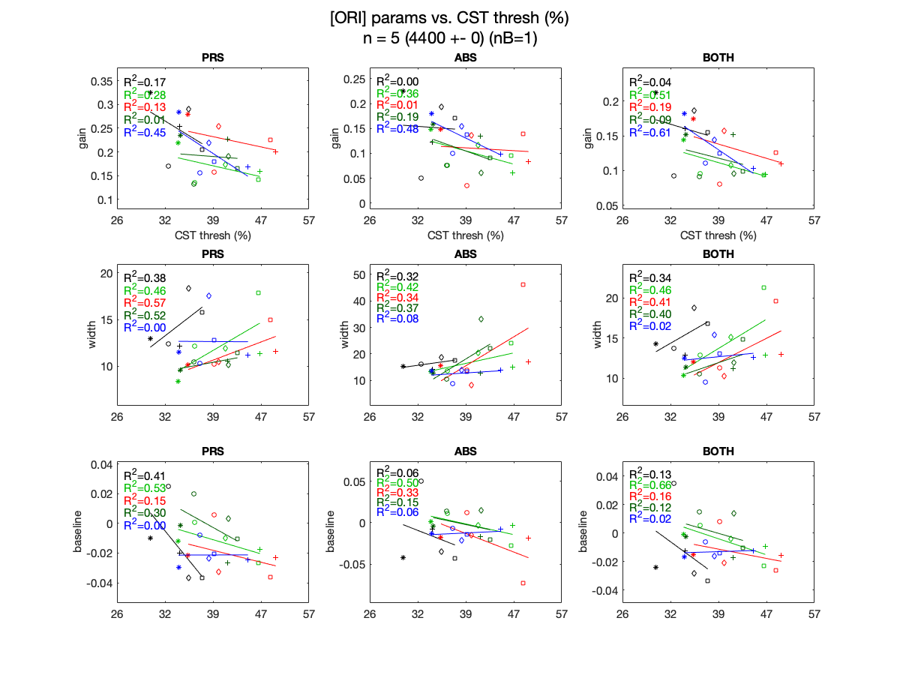
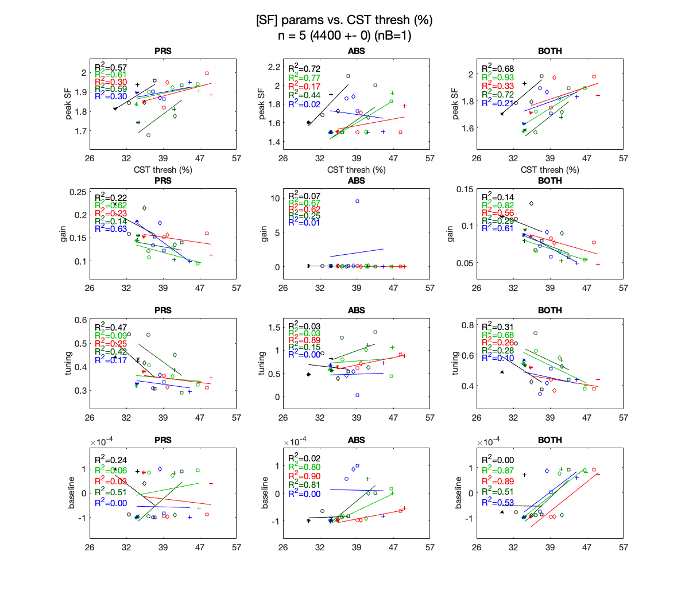
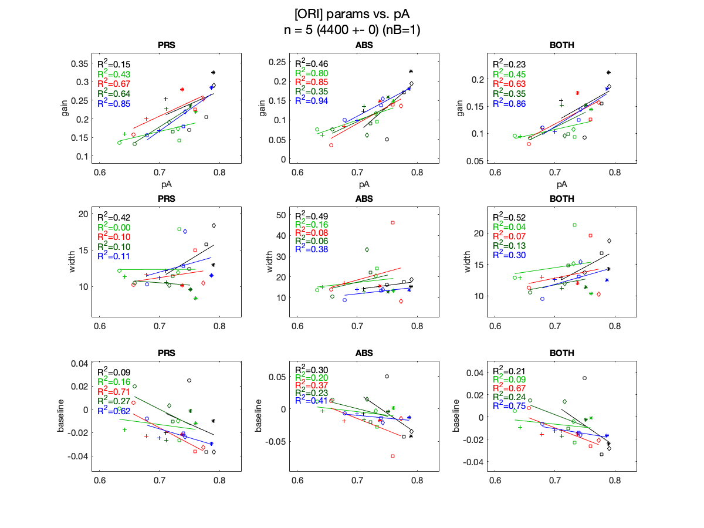
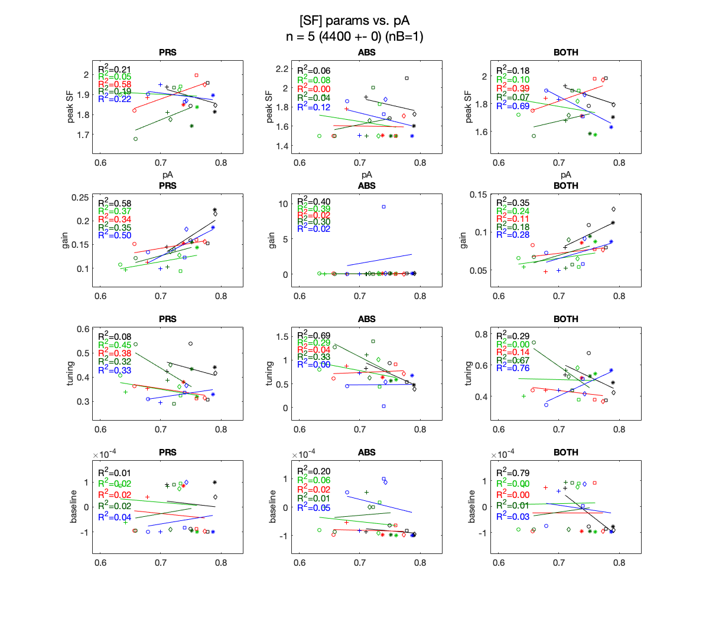

% correlational analysis % assess the correlation between the contrast thresh vs.. each parameter for ix = 1:2 switch ix case 1, x_data = cst_ave_allSubj; xlabel_ = 'CST thresh (%)'; case 2, x_data = pA_ave_allSubj; xlabel_ = 'pA'; end xbuffer = std(x_data(:)); xmin = min(x_data(:)) - xbuffer; xmax = max(x_data(:)) + xbuffer; switch ix case 1 xticks_ = linspace(xmin, xmax, 5); xticklabels_ = round(10.^xticks_*100); case 2 xticks_ = .6:.1:.9; xticklabels_ = xticks_; end y_data = margParamsK_allSubj; % try SLOPE next time for ifeature = 1:2 nameModelParams = namesModelParams{ifeature}; nparams = length(nameModelParams); margParams_perF = y_data{ifeature}; figure('Position', [0 500 1200 nparams*300]) for itype = 1:ntypes for iparam = 1:nparams ymin_toPlot = margParams_perF(:, :, itype, 1:nLoc, iparam); ybuffer = std(ymin_toPlot(:)); ymin = min(ymin_toPlot(:)) - ybuffer; ymax = max(ymin_toPlot(:)) + ybuffer; subplot(nparams, ntypes, (iparam-1)*ntypes+itype) hold on, box on for iLoc = 1:nLoc % get x and y x = x_data(:, iLoc); y = squeeze(margParams_perF(:, :, itype, iLoc, iparam)); % plot IDVD data for isubj = 1:nsubj plot(x(isubj), y(isubj), marks_allSubj_full{isubj}, 'color', colors5Loc(iLoc, :)) end % linear regression lm = polyfit(x, y, 1); yfit = polyval(lm, x); plot(x, yfit, 'color', colors5Loc(iLoc, :), 'handlevisibility', 'off') R2 = getR2(y, yfit); text(xmin+xbuffer/5, ymax - iLoc*ybuffer/2, sprintf('R^2=%.2f', R2), 'color', colors5Loc(iLoc, :)) if iparam == 1, xlabel(xlabel_), end ylabel(nameModelParams{iparam}) title(namesType{itype}) ylim([ymin, ymax]) xlim([xmin, xmax]) xticks(xticks_) xticklabels(xticklabels_) end end set(findall(gcf, '-property', 'FontSize'), 'FontSize',15) make_sgtitle(sprintf('[%s] params vs. %s', namesFeature{ifeature}, xlabel_), subjName, nB, nsubj, nAllTrials) end end end



